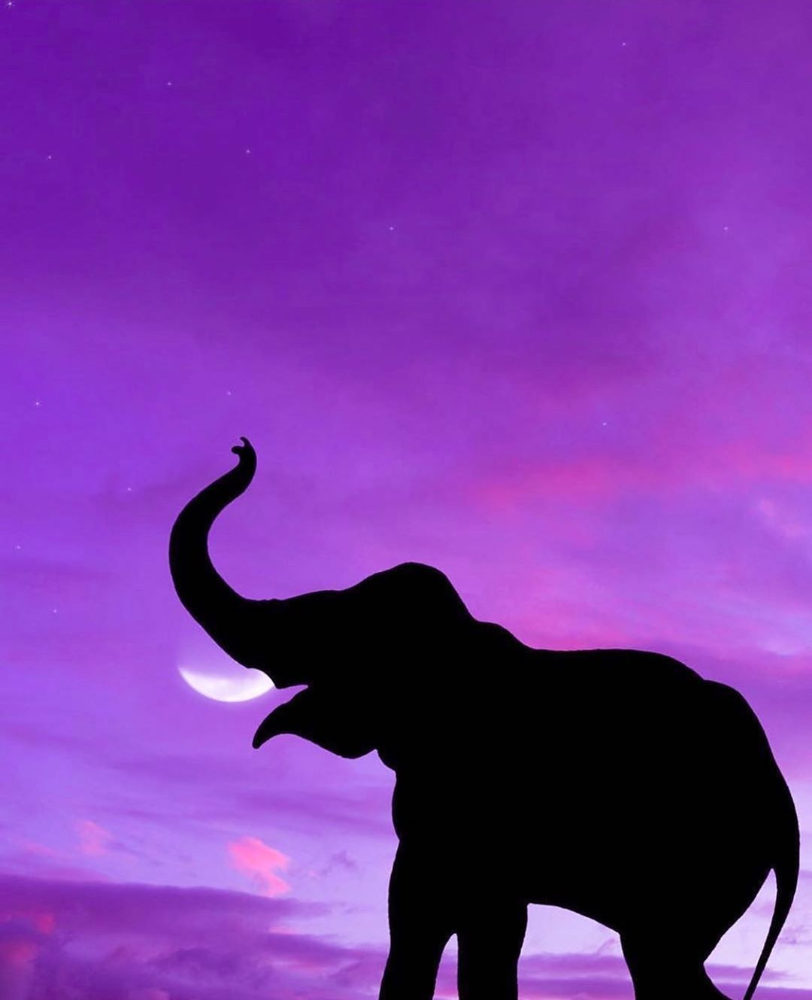

Elefantes
Datos
Qué son los elefantes?
Caracteristicas de los elefantes
¿Donde viven los elefantes?
¿Que comen los elefantes?
Qué son los elefantes?
Los elefantes son una familia de mamiferos cuadrupedos de gran tamaño, famosos por sus grandes orejas y trompa prensil, así como sus colmillos blancos y largos de marfil, ademas de por ser los animales terrestres mas voluminosos que existen hoy en dia en el mundo.
Caracteristicas de los elefantes
Son animales voluminosos, cuyos cuerpos pueden medir cerca de 4 metros de alto y varias toneladas de peso (en promedio, unos 7500 kg). Su cerebro, el mas grande de todos los animales terrestres, pesa por si solo 5 kg, y le confiere al elefante una inteligencia comparable con un cetaceo o algunos primates.
¿Donde viven los elefantes?
Las especies actuales de elefantes viven en areas calidas de bosques, praderas y sabanas, en Africa y ciertas regiones de Asia como India, Sri Lanka, Malasia, Indonesia, Tailandia y Vietnam. De hecho, se suele distinguir entre las especies conforme a su hogar usual de residencia: elefantes africanos y elefantes asiaticos, dado que poseen rasgos fisicos diferentes.
¿Que comen los elefantes?
Los elefantes son herbivoros, y su dieta se compone principalmente de hierbas, semillas, cortezas y otras fibras vegetales.

Fuente de informacion